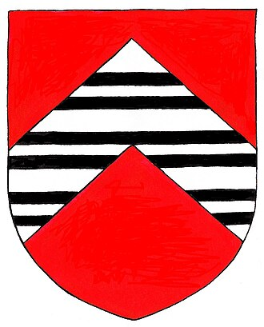
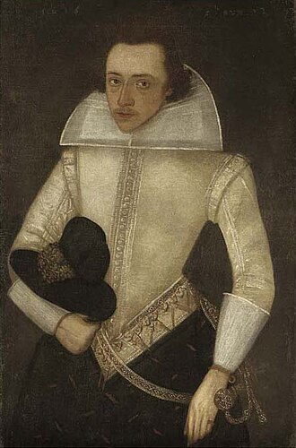
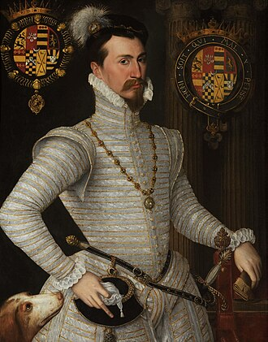
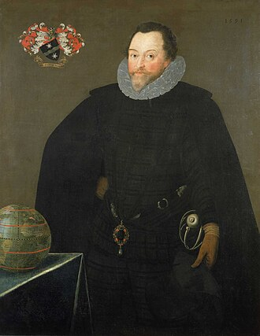
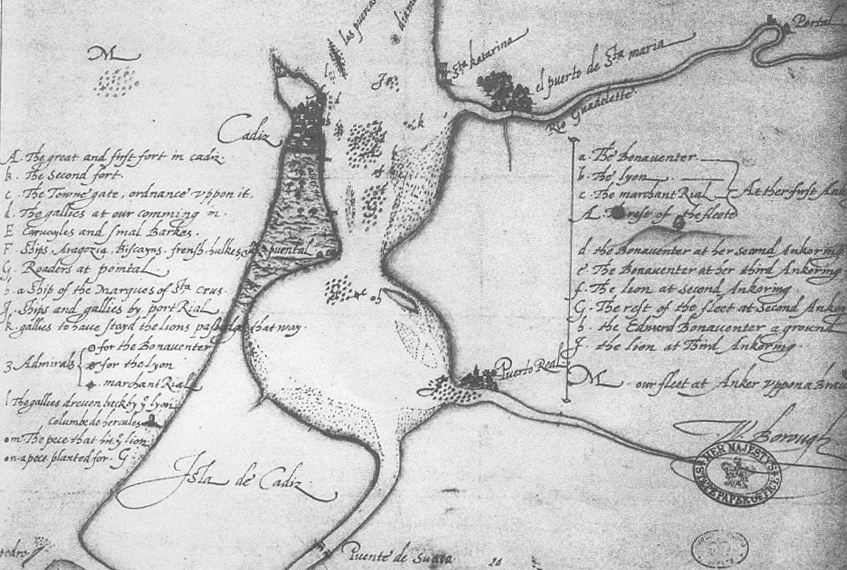
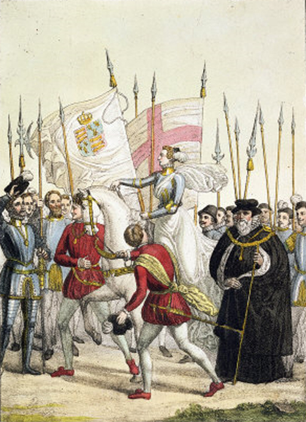
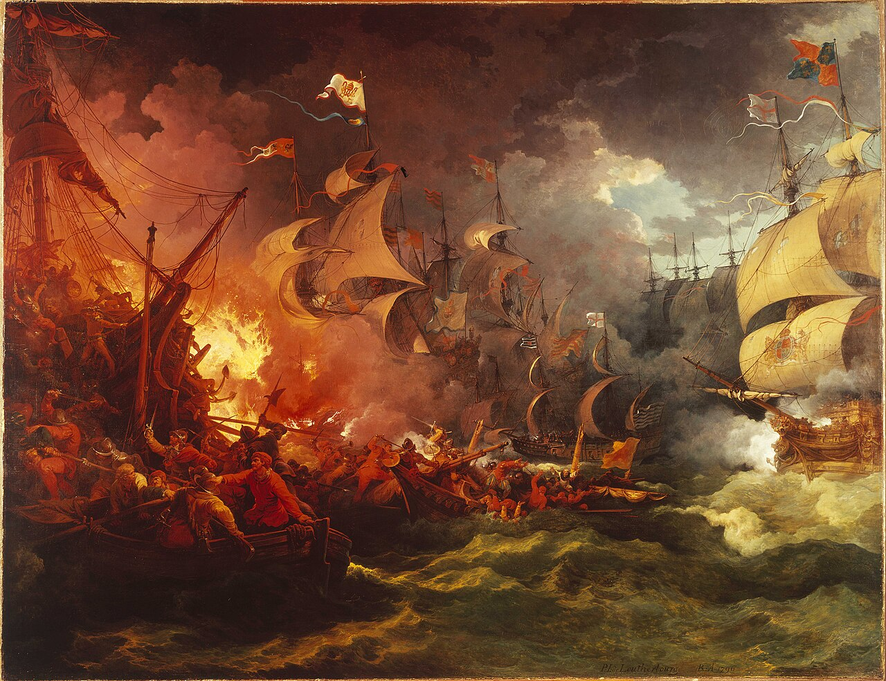

Key Topic 2: Challenges to Elizabeth at home and abroad, 1569-88
Paper 2: Early Elizabethan England, 1558-88
Course Textbook
Enquiry: From religious division to the Armada: How did Elizabeth secure her throne?
Contents
|
Lesson 1: KT 2.1: Plots and Revolts at Home, 1569–1587
|
|
|
Lesson 2: KT 2.2: Relations with Spain, 1569–1585
|
|
|
Lesson 3: KT 2.3: The Outbreak of War with Spain, 1585–1588
|
|
|
Lesson 4: KT 2.4: The Spanish Armada: Strategy, Conflict & Defeat, 1588
|
|
L1: KT 2.1: Plots and Revolts at Home, 1569–1587[[SRC_MARKER:L4_Start]]
Learning Objectives
Explain and evaluate The Revolt of the Northern Earls (NOV 1569–JAN 1570): Latin Mass at Durham Cathedral, Spanish Troops Fail to Land, Four Hundred and Fifty Executions.
Explain and evaluate Papal Bull & The Ridolfi Plot (1570–1571): Regnans in Excelsis Excommunication, Italian Banker Roberto Ridolfi Courier, Norfolk Beheaded on Tower Hill.
Explain and evaluate The Throckmorton Plot & Bond of Association (1583–1584): French Duke of Guise Invasion Plan, Philip II Provides 200,000 Ducats, Bond of Association Traitor Oath.
Explain and evaluate The Babington Plot & Walsingham’s Spies (1586): Letters in Waterproof Beer Barrels, Phelippes Decodes Gallows Cipher, Explicit Approval of Regicide.
Explain and evaluate The Execution of Mary, Queen of Scots (FEB 1587): Act for the Queen’s Safety Trial, Fotheringhay Castle Great Hall Block, Divine Right Monarchical Martyrdom.
Recall & Retrieval
1. Which two northern Catholic earls led the 1569 rebellion?
2. Which Catholic cathedral did the Northern Earls seize to celebrate the Latin Mass?
3. What papal bull excommunicated Elizabeth I in 1570?
4. Which English duke was executed in 1572 for his role in the Ridolfi Plot?
5. Who was Queen Elizabeth’s Spymaster General from 1573?
6. How did plotters smuggle coded messages to Mary Stuart during the Babington Plot?
7. What skilled cryptographer decoded Mary Stuart’s letters for Walsingham?
8. What 1584 document pledged to execute anyone who attempted to assassinate Elizabeth?
9. In which castle was Mary, Queen of Scots beheaded on 8 February 1587?
10. Approximately how many northern rebels did Elizabeth execute after the 1569 revolt?
Vocabulary Check
The Odd One Out: Circle ONE term that does not belong with the others. Explain your reasoning: What historical connection links the other terms, and why is your chosen term different?
Revolt of the Northern Earls | Ridolfi Plot | Throckmorton Plot | Babington Plot | Walsingham's Spy Network | Bond of Association
Teacher Model / Pupil Reasoning:
[[SRC_MARKER:L4_Source_0]]
Source S1: Francis Throckmorton and the 1583 Catholic Conspiracy

Francis Throckmorton, the young Catholic conspirator who served as a courier between Mary Queen of Scots and the French and Spanish ambassadors before being arrested and tortured in 1583.
[[SRC_MARKER:L4_Source_1]]
Source S2: Anthony Babington and the 1586 Conspiracy

Anthony Babington, the wealthy young Catholic gentleman whose coded letters to Mary, Queen of Scots directly implicated her in the plot to assassinate Elizabeth in 1586.
[1.1] In November 1569, Catholic discontent exploded into armed rebellion in the north of England, led by Charles Neville, Earl of Westmorland, and Thomas Percy, Earl of Northumberland. The earls were furious at their loss of political influence at court to upstart Protestants like William Cecil, and angry over Crown control of northern mineral rights. The rebels marched into Durham Cathedral, tore down Protestant communion tables, burned English service books, and celebrated traditional Latin Catholic Mass.
[1.2] They planned to march south, liberate Mary, Queen of Scots from Tutbury, and marry her to the Duke of Norfolk. However, the rebellion collapsed when the Earl of Sussex mobilized a royal army; the earls fled into Scotland, and Elizabeth ordered the ruthless execution of 450 ordinary rebels.
[2.1] In February 1570, Pope Pius V issued the momentous papal bull Regnans in Excelsis, excommunicating Elizabeth as a heretic and releasing all English subjects from their oaths of allegiance. This transformed English Catholics into potential traitors in the eyes of the law. Capitalizing on this decree, Italian banker Roberto Ridolfi orchestrated a conspiracy in 1571 to assassinate Elizabeth, land 10,000 Spanish soldiers under the Duke of Alba, and place Mary on the throne married to the Duke of Norfolk.
[2.2] William Cecil and Walsingham intercepted ciphered messages, exposed the plot, and arrested the conspirators. Ridolfi remained abroad, the Spanish ambassador was expelled, and Norfolk was executed on Tower Hill in June 1572.
[[SRC_MARKER:L4_Source_4]]
Source S3: Francis Throckmorton and the 1583 Catholic Conspiracy
Francis Throckmorton, the young Catholic conspirator who served as a courier between Mary Queen of Scots and the French and Spanish ambassadors before being arrested and tortured in 1583.
Q1. How did the discovery of the Throckmorton Plot lead directly to Parliament creating the Bond of Association in 1584?
[3.1] (Source A) Catholic plots escalated in 1583 with the Throckmorton Plot, organized by young Catholic gentleman Francis Throckmorton. The conspiracy planned for the French Catholic Duke of Guise to invade England with Spanish financial funding from Philip II, depose Elizabeth, and crown Mary. Sir Francis Walsingham's spy network placed Throckmorton under surveillance, arrested him, and extracted a full confession under torture on the rack.
[3.2] The Spanish ambassador, Bernardino de Mendoza, was expelled from England. In response to the growing peril, Cecil and Walsingham drafted the Bond of Association (1584), an oath taken by thousands of Englishmen pledging to execute anyone attempting or benefiting from Elizabeth’s assassination.
[[SRC_MARKER:L4_Source_5]]
Source S4: Anthony Babington and the 1586 Conspiracy
Anthony Babington, the wealthy young Catholic gentleman whose coded letters to Mary, Queen of Scots directly implicated her in the plot to assassinate Elizabeth in 1586.
Q2. Why was Mary’s written reply to Babington’s letter the decisive piece of evidence Walsingham needed to secure her death warrant?
[4.1] (Source B) In 1586, Catholic gentleman Anthony Babington devised a plan to murder Elizabeth and spark an international Catholic invasion to install Mary on the English throne. Mary, now held under strict confinement by Puritan warden Sir Amias Paulet at Chartley Hall, corresponded with Babington through coded letters hidden inside beer barrels. However, Walsingham’s double agent Gilbert Gifford intercepted every message, which was decoded by cryptanalyst Thomas Phelippes.
[4.2] Crucially, on 17 July 1586, Mary sent a letter explicitly approving the assassination of Elizabeth. Walsingham now possessed the incontrovertible written evidence of regicide required to condemn Mary under the 1585 Act for the Preservation of the Queen's Safety.
[5.1] In October 1586, Mary was brought to trial before a commission of forty-six peers at
Fotheringhay Castle in Northamptonshire and found guilty of high treason. Elizabeth agonized for months over executing an anointed cousin, fearing it would set a dangerous precedent for regicide and provoke retaliation from Catholic Spain and Scotland. Under immense pressure from Parliament and the Privy Council, Elizabeth signed the death warrant on 1 February 1587, but ordered Cecil not to dispatch it immediately.
[5.2] Cecil acted secretly, and on
8 February 1587, Mary was beheaded in the Great Hall at Fotheringhay. The execution eliminated the domestic Catholic figurehead, but provided Philip II with the ultimate religious justification to launch the Spanish Armada.
[[SRC_MARKER:L4_Task_4_0]]Q3. Master Disciplinary Enquiry Task
Pair & Share Activity
Q4. Discuss with your partner: Which plot posed the greatest danger to Elizabeth's life?
GCSE Exam Practice
Q5. Q1(a). Describe one key feature of the Revolt of the Northern Earls (1569). [2 marks]
Q6. Q1(b). Describe one key feature of the Babington Plot (1586). [2 marks]
Q7. Q2. Explain why Mary, Queen of Scots was executed in 1587. [12 marks]
L2: KT 2.2: Relations with Spain, 1569–1585[[SRC_MARKER:L5_Start]]
Learning Objectives
Explain and evaluate Political and Religious Rivalry with Spain (1570–1577): Antwerp Deep-Water Ports Threat, William of Orange Protestant Rebellion, Funding Sea Beggars Privateers.
Explain and evaluate Commercial Rivalry in the New World (1570–1579): Spanish Monopoly on American Bullion, Nombre de Dios Mule Train Ambush, Queen Licences Legal Piracy.
Explain and evaluate Drake’s Circumnavigation (1577–1580): Cacafuego Surrenders £140,000 Treasure, Uncharted Pacific Raids on Peru, Golden Hind Knighthood Defiance.
Explain and evaluate Escalation & Elizabeth’s Defiance (1581–1584): Philip II Inherits Portuguese Crown, Assassination of William of Orange, French Catholic Guise League Accord.
Explain and evaluate The Treaties of Joinville & Nonsuch (1584–1585): Secret Treaty of Joinville (Dec 1584), 7,400 English Troops under Dudley, Direct Military Confrontation Declared.
Recall & Retrieval
1. Which Spanish king had previously been married to Elizabeth’s sister Mary I?
2. What religion was Philip II, positioning himself as champion of the Counter-Reformation?
3. What Spanish monopoly prohibited English merchants from trading in the Americas?
4. What term describes state-licensed sea captains who raided enemy merchant ships?
5. Which English privateer became the first to circumnavigate the globe (1577–80)?
6. What famous Spanish treasure ship was captured by Drake off Ecuador in 1579?
7. How much silver and treasure did Drake capture from the *Cacafuego*?
8. Where did Elizabeth publicly knight Francis Drake in 1581?
9. Why was Philip II enraged by Elizabeth knighting Francis Drake?
10. What Dutch territory revolted against Philip II’s rule in 1566?
Vocabulary Check
The Golden Sentence: Choose TWO terms from the word bank. Write ONE grammatically sophisticated, historically accurate sentence connecting them using a causal conjunction (because, although, or consequently):
Privateer | Circumnavigation | New World | San Juan de Ulúa | Drake's Raid on Cadiz | Singeing the King of Spain's Beard
Teacher Model / Pupil Sentence:
[[SRC_MARKER:L5_Source_0]]
Source S1: Robert Dudley, Earl of Leicester

Robert Dudley, Earl of Leicester, Elizabeth’s Master of the Horse and favourite, who strongly urged direct English military intervention to support Dutch Protestant rebels against Spain.
[[SRC_MARKER:L5_Source_1]]
Source S2: Sir Francis Drake, Privateer and Navigator

Sir Francis Drake, English privateer who seized massive quantities of Spanish silver from South American ports during his 1577–1580 circumnavigation aboard the Golden Hind.
[[SRC_MARKER:L5_Source_2]]
Source S3: Robert Dudley, Earl of Leicester
Robert Dudley, Earl of Leicester, Elizabeth’s Master of the Horse and favourite, who strongly urged direct English military intervention to support Dutch Protestant rebels against Spain.
Q1. Why did Elizabeth resist Dudley’s calls for direct war with Spain in the Netherlands for so many years before 1585?
[1.1] (Source A) Throughout the 1570s, ideological and geopolitical tensions mounted between Protestant England and Catholic Spain, the undisputed European superpower ruled by Philip II. The primary flashpoint was the Dutch Revolt, where Protestant rebels led by Prince William of Orange fought against Spanish Habsburg rule in the Netherlands.
[1.2] Elizabeth faced a delicate dilemma: direct military intervention risked all-out war with Spain, yet a total Spanish victory would leave the Channel coast under hostile military control. Elizabeth pursued covert proxy diplomacy, allowing Dutch Protestant privateers known as the Sea Beggars to shelter in English ports and attack Spanish supply shipping, while secretly sending financial subsidies to Dutch rebels.
[2.1] Commercial rivalry intensified as English mariners challenged Spain’s strict imperial trade monopoly in the Americas. Under Spanish colonial law, foreign merchants were banned from trading with Spanish settlements in the Caribbean and Central America. English captains, led by John Hawkins, defied these bans by pioneering the transatlantic slave trade and smuggling manufactured goods.
[2.2] When Spanish naval forces ambushed Hawkins’ fleet at San Juan de Ulúa in 1568, English privateers felt morally justified in waging undeclared piracy. English adventurers, prominently Francis Drake, raided Spanish treasure fleets and coastal towns in the West Indies, plundering silver mule trains at Nombre de Dios in 1572.
[[SRC_MARKER:L5_Source_4]]
Source S4: Sir Francis Drake, Privateer and Navigator
Sir Francis Drake, English privateer who seized massive quantities of Spanish silver from South American ports during his 1577–1580 circumnavigation aboard the Golden Hind.
Q2. How did Drake’s state-backed piracy against Spanish treasure fleets push Philip II and Elizabeth toward open war?
[3.1] (Source B) In December 1577, Francis Drake sailed from Plymouth with five ships on a covert mission backed by Elizabeth to disrupt Spanish commerce in the Pacific. After surviving treacherous storms in the Strait of Magellan, Drake’s flagship, renamed the Golden Hind, sailed up the undefended Pacific coast of South America, plundering Spanish ports in Chile and Peru.
[3.2] In March 1579, Drake captured the Spanish treasure galleon Nuestra Señora de la Concepción (the 'Cacafuego'), seizing eighty pounds of gold, thirteen chests of silver coins, and twenty-six tons of unrefined silver. Drake sailed across the Pacific and Indian Oceans, returning to Plymouth in September 1580 with £400,000 in plunder, single-handedly eliminating the English Crown debt.
[4.1] In April 1581, Elizabeth made a provocative public statement of defiance against Spain. Flouting Philip II's demands that Drake be handed over as a pirate, the Queen visited the Golden Hind at Deptford and publicly knighted Sir Francis Drake on the quarterdeck. Philip was enraged by this royal endorsement of piracy.
[4.2] Spain's geopolitical power grew dramatically in 1580 when Philip inherited the Portuguese throne, acquiring the Portuguese navy and global trading empire. Tensions surged further as Spanish forces made steady military gains in the Netherlands under the brilliant command of the Duke of Parma, capturing key Dutch fortresses and pushing the Protestant rebels to the brink of collapse.
[5.1] The crisis reached an emergency in July 1584 when a Catholic fanatic assassinated Dutch leader
William the Silent, leaving the Dutch revolt leaderless. In December 1584, Philip II signed the secret
Treaty of Joinville with the French Catholic League, uniting Europe's two Catholic superpowers against Protestantism and eliminating the threat of France attacking Spain.
[5.2] Realizing that England would stand completely isolated if the Netherlands fell, Elizabeth abandoned her policy of covert aid. In August 1585, she signed the
Treaty of Nonsuch, placing the Dutch Netherlands under English military protection, agreeing to dispatch
7,400 English soldiers funded by the Crown, and officially entering into direct war with Spain.
[[SRC_MARKER:L5_Task_4_0]]Q3. Master Disciplinary Enquiry Task
Pair & Share Activity
Q4. Discuss with your partner: Why did relations with Spain deteriorate so badly by the 1580s?
GCSE Exam Practice
Q5. Q1(a). Describe one key feature of English privateering against Spain. [2 marks]
Q6. Q1(b). Describe one key feature of Francis Drake’s raid on Cadiz (1587). [2 marks]
Q7. Q3. “Commercial rivalry was the main cause of conflict between England and Spain in the years 1576–85.” How far do you agree? Explain your answer. [16 marks + 4 marks SPaG]
L3: KT 2.3: The Outbreak of War with Spain, 1585–1588[[SRC_MARKER:L6_Start]]
Learning Objectives
Explain and evaluate Dudley’s Campaign in the Netherlands (DEC 1585–1586): Governor-General Title Angers Elizabeth, Underfunded & Deserting English Troops, Prevents Parma Capturing Deep Ports.
Explain and evaluate Military Setbacks: Zutphen & Deventer (1586–1587): Sir Philip Sidney Killed at Zutphen, Stanley & Yorke Betray Dutch Forts, Dutch Council of State Distrust.
Explain and evaluate Drake’s Raid on Cadiz (APRIL 1587): Thirty Spanish Warships Destroyed, ‘Singeing the King of Spain’s Beard’, Postpones Armada by Twelve Months.
Explain and evaluate Impact of the Cadiz Raid (1587–1588): Seasoned Barrel Staves Incinerated, Santa Cruz Dies; Medina Sidonia Inexperienced, Rotting Food & Leaking Water Casks.
Explain and evaluate The Armada Sets Sail (MAY–JULY 1588): 130 Ships & 30,000 Men Sail, Parma Lacks Deep-Water Harbor in Shallows, Unreliable 48-Hour Message Relay.
Recall & Retrieval
1. Which Dutch Protestant leader was assassinated by a Catholic fanatic in 1584?
2. What treaty between Philip II and the French Catholic League was signed in 1584?
3. What 1585 treaty committed English troops to fight alongside Dutch rebels?
4. Who was appointed commander of the 7,400 English soldiers sent to the Netherlands?
5. What controversial political title did Robert Dudley accept in the Netherlands, outraging Elizabeth?
6. Which brilliant Spanish general commanded the Army of Flanders in the Netherlands?
7. In which Spanish harbour did Francis Drake launch a daring surprise raid in April 1587?
8. How many Spanish ships did Drake destroy in Cadiz harbour in 36 hours?
9. What famous phrase described Drake’s raid on Cadiz?
10. What vital naval supplies did Drake destroy at Cadiz that crippled the Armada’s food storage?
Vocabulary Check
Conceptual Classification: Categorise the terms from the word bank into the two historical boxes below:
Treaty of Nonsuch | Robert Dudley | Spanish Netherlands | Pacification of Ghent | Protestant Rebels | Crescent Formation
Power, Governance & Warfare
Economy, Trade & Society
[[SRC_MARKER:L6_Source_0]]
Source S1: Drake’s Raid on Cadiz (1587)

Sir Francis Drake’s daring naval raid on the Spanish port of Cadiz in April 1587, destroying over thirty Spanish supply ships and delaying the Armada by over a year.
[[SRC_MARKER:L6_Source_1]]
Source S2: Elizabeth I’s Speech to the Troops at Tilbury (August 1588)

Contemporary manuscript of Queen Elizabeth I’s famous speech delivered to English land forces assembled at Tilbury Camp: "I know I have the body of a weak and feeble woman, but I have the heart and stomach of a king."
[1.1] Under the terms of the Treaty of Nonsuch, Elizabeth appointed her favourite, Robert Dudley, Earl of Leicester, to command the English expeditionary army of 7,000 troops sent to the Netherlands in December 1585. However, the campaign began in political chaos.
[1.2] In January 1586, Leicester accepted the title of Governor-General of the Low Countries from the Dutch Estates General. Elizabeth was enraged, viewing this unauthorized acceptance as an intolerable usurpation of sovereign power that implied England sought to annex the Netherlands, and she severely reprimanded Leicester, undermining his authority in the eyes of Dutch allies and Spanish commanders alike.
[2.1] Leicester’s military operations were plagued by logistical shortages, tactical blunders, and internal dissension. Elizabeth refused to provide sufficient funding, leaving English soldiers unpaid, diseased, and starving. In September 1586, English forces failed to capture the Spanish supply base at Zutphen, a battle famed for the death of poet-soldier Sir Philip Sidney.
[2.2] Relations with the Dutch collapsed completely in January 1587 when English Catholic mercenary commanders, Sir William Stanley and Rowland York, defected to Spain and betrayed the key fortresses of Deventer and the Zutphen sconces to the Duke of Parma. Deeply humiliated and mistrusted by Dutch leaders, Leicester was recalled to England in December 1587, having achieved negligible military gains.
[[SRC_MARKER:L6_Source_4]]
Source S3: Drake’s Raid on Cadiz (1587)
Sir Francis Drake’s daring naval raid on the Spanish port of Cadiz in April 1587, destroying over thirty Spanish supply ships and delaying the Armada by over a year.
Q1. Why did Drake describe his raid on Cadiz as "singeing the King of Spain’s beard", and how did it give England vital time to prepare for invasion?
[3.1] (Source A) With war now open and Philip assembling a massive invasion armada in Spanish ports, Elizabeth dispatched Sir Francis Drake with twenty-four warships to disrupt Spanish preparations. On 19 April 1587, Drake audaciously sailed straight into the heavily fortified harbour of Cadiz, catching the Spanish fleet unprepared.
[3.2] Over thirty-six hours of daring naval warfare, Drake destroyed or captured thirty Spanish transport ships and warships, broke harbour fortifications, and plundered enormous quantities of arms and provisions. Drake famously characterized this pre-emptive strike as "singeing the King of Spain's beard", demonstrating English naval supremacy in Spain's home waters.
[4.1] Drake’s raid on Cadiz inflicted devastating tactical and logistical damage on Spanish war planning. He captured the San Felipe, a massive Portuguese East Indiaman carrying £108,000 in spices and treasure, which provided funds for English defense and yielded trade secrets. More critically, Drake sailed along the Portuguese coast destroying fishing fleets and burning thousands of tons of seasoned oak barrel staves.
[4.2] This forced the Spanish to construct water barrels from green, unseasoned wood, causing food supplies to rot and drinking water to leak during the 1588 voyage. Most decisively, Drake’s raid delayed the sailing of the Armada by twelve months, giving England vital time to fortify coastlines and build warships.
[[SRC_MARKER:L6_Source_6]]
Source S4: Elizabeth I’s Speech to the Troops at Tilbury (August 1588)
Contemporary manuscript of Queen Elizabeth I’s famous speech delivered to English land forces assembled at Tilbury Camp: "I know I have the body of a weak and feeble woman, but I have the heart and stomach of a king."
Q2. How did Elizabeth use the Tilbury speech to transform the gender liability of being a female monarch into a source of national inspiration?
[5.1] (
Source B) In May 1588, the
Spanish Armada (the 'Enterprise of England') finally set sail from Lisbon under the command of the
Duke of Medina Sidonia, comprising
130 warships, 8,000 sailors, and 19,000 soldiers. Philip II's grand strategy was to sail up the English Channel, anchor off the coast of Flanders, and join forces with the
Duke of Parma’s 27,000 veteran soldiers, who would be ferried across the Channel in flat-bottomed barges under the Armada’s naval escort.
[5.2] However, the plan contained fatal strategic flaws: Medina Sidonia had no deep-water port in the Low Countries to shelter his fleet, and communication between the Armada and Parma's army required overland messengers, creating dangerous delays and coordination failures.
[[SRC_MARKER:L6_Task_4_0]]Q3. Master Disciplinary Enquiry Task
Pair & Share Activity
Q4. Discuss with your partner: Was the outbreak of war with Spain in 1585 inevitable?
GCSE Exam Practice
Q5. Q1(a). Describe one key feature of the Treaty of Nonsuch (1585). [2 marks]
Q6. Q1(b). Describe one key feature of Robert Dudley’s campaign in the Netherlands. [2 marks]
Q7. Q2. Explain why England became involved in the Netherlands in 1585. [12 marks]
L4: KT 2.4: The Spanish Armada: Strategy, Conflict & Defeat, 1588[[SRC_MARKER:L7_Start]]
Learning Objectives
Explain and evaluate Channel Battles: Plymouth to Isle of Wight (JULY 1588): Seven-Mile Crescent Defensive Line, Long-Range Culverin Duel Beyond Boarding, Prevented Landing on Isle of Wight.
Explain and evaluate Calais Roads & The Fireships (7–8 AUG 1588): Eight Pitch-Soaked Vessels at Midnight, Panic-Stricken Spanish Ships Cut Anchors, Shattered Crescent Never Reforms.
Explain and evaluate The Battle of Gravelines (8 AUG 1588): Hawkins’ Low Race-Built Galleons, Rapid-Fire Broadside Gunnery Close Range, Three Galleons Sunk & Fleet Scattered.
Explain and evaluate The Winds & Atlantic Retreat (AUG–SEPT 1588): Gale-Force ‘Protestant Wind’ Drives North, Missing Anchors on Scottish & Irish Reefs, Only Sixty-Seven Battered Ships Return.
Explain and evaluate Consequences of the English Victory (1588–1589): Tilbury Speech: ‘Heart & Stomach of a King’, ‘God Blew and They Were Scattered’ Medals, English Naval Superpower Prestige Secured.
Recall & Retrieval
1. How many ships sailed in the Spanish Armada in May 1588?
2. Who was appointed Commander-in-Chief of the Spanish Armada by Philip II?
3. What veteran Spanish army in the Netherlands was the Armada supposed to collect?
4. Who served as Lord High Admiral commanding the English fleet in 1588?
5. What naval treasurer revolutionized English galleon design with lower forecastles?
6. What long-range naval cannon allowed English ships to bombard Spanish galleons from safety?
7. What defensive formation did the Spanish Armada maintain sailing up the Channel?
8. What terrifying tactic did the English use at midnight on 7 August off Calais?
9. What decisive naval battle was fought on 8 August 1588 off the Flemish coast?
10. What route were the surviving Spanish ships forced to take back to Spain?
Vocabulary Check
Spot the Deliberate Error: Read the statement below. One historical fact or vocabulary concept has been deliberately falsified. Underline the error and explain the accurate historical reality below:
Armada | Duke of Medina Sidonia | Galleon | Fireships | Battle of Gravelines | Protestant Wind
"In July 1588, the Duke of Medina Sidonia successfully conquered England after Spanish Galleons easily destroyed English Fireships at the Battle of Gravelines."
Teacher Model / Historical Correction:
[[SRC_MARKER:L7_Source_0]]
Source S1: The Battle of Gravelines and the Fireships (8 August 1588)

Contemporary maritime painting showing English fireships scattering the Spanish Armada off Calais on the night of 7–8 August 1588, breaking the defensive crescent formation.
[[SRC_MARKER:L7_Source_1]]
Source S2: The Armada Portrait of Elizabeth I (1588)
The iconic Armada Portrait attributed to George Gower, showing Elizabeth I with her hand resting on the globe, with the defeated Spanish fleet wrecked on rocks in the background.
[1.1] On 19 July 1588, the Spanish Armada was sighted off the Lizard in Cornwall, advancing in an impenetrable seven-mile-wide crescent defensive formation, with heavily armed galleons protecting unarmed supply storeships in the centre. The English fleet, commanded by Lord Howard of Effingham and Sir Francis Drake, sailed out from Plymouth. For a week, running artillery duels took place off Plymouth, Portland Bill, and the Isle of Wight.
[1.2] English captains utilized their superior maneuverability to stay upwind and fire long-range culverin cannons, avoiding Spanish boarding tactics. While the English failed to break the crescent formation, they successfully prevented the Spanish from seizing a secure anchorage on the Isle of Wight.
[2.1] On 6 August, Medina Sidonia anchored the Armada off Calais Roads, awaiting news from the Duke of Parma. However, Parma’s army was blockaded in Dunkirk by Dutch flyboats and was not ready to embark. Recognizing the Spanish vulnerability at anchor, Howard launched a daring midnight attack on 7–8 August.
[2.2] The English loaded eight old transport vessels with pitch, tar, and loaded cannons, set them ablaze, and sent these eight fireships drifting with the wind and tide into the densely packed Spanish anchorage. Panic swept through the Armada: fearing deadly explosive "hellburners", Spanish captains severed their anchor cables and scattered into the darkness. The disciplined crescent formation was permanently broken.
[[SRC_MARKER:L7_Source_4]]
Source S3: The Battle of Gravelines and the Fireships (8 August 1588)
Contemporary maritime painting showing English fireships scattering the Spanish Armada off Calais on the night of 7–8 August 1588, breaking the defensive crescent formation.
Q1. Why did the fireship attack at Calais prove the decisive tactical turning point in the defeat of the Spanish Armada?
[3.1] (Source A) At dawn on 8 August 1588, English warships attacked the disorganized Spanish fleet off the coast of Gravelines. John Hawkins’ modern race-built galleons—lower, faster, and more maneuverable than the bulky Spanish vessels—closed to point-blank range, pounding Spanish hulls with continuous broadsides. English gun crews, trained to rapidly reload four-wheeled gun carriages, fired multiple shots for every single Spanish reply.
[3.2] Spanish gunners, crowded with soldiers and armed with mismatched cannons, were unable to reload effectively. Three Spanish galleons were sunk, many were severely crippled, and over 1,000 Spanish sailors were killed, while the English suffered negligible ship losses.
[4.1] Following Gravelines, the surviving Armada faced utter destruction. A fierce southwesterly gale—celebrated by Protestants as the "Protestant Wind"—prevented the Spanish from reuniting with Parma and drove the fleet into the treacherous North Sea. With their anchor cables severed at Calais, Spanish ships could not shelter in friendly harbours and were forced to undertake a perilous voyage home around the northern coast of Scotland and the western coast of Ireland.
[4.2] Battered by fierce Atlantic storms and lacking fresh water and navigational charts, dozens of ships were wrecked on the rocky cliffs of Scotland and Ireland. Surviving sailors who crawled ashore were slaughtered by local clans or English garrisons; barely sixty-seven battered vessels returned to Spain.
[[SRC_MARKER:L7_Source_6]]
Source S4: The Armada Portrait of Elizabeth I (1588)
The iconic Armada Portrait attributed to George Gower, showing Elizabeth I with her hand resting on the globe, with the defeated Spanish fleet wrecked on rocks in the background.
Q2. How does the symbolism in the Armada Portrait present Elizabeth’s victory as both divinely ordained and the start of global empire?
[5.1] (
Source B) England's triumph over the Armada was celebrated as a divine validation of Protestantism, with Elizabeth issuing commemorative medals inscribed:
"God blew and they were scattered". At the military camp at Tilbury, Elizabeth delivered her iconic address, declaring she had
"the heart and stomach of a king, and of a king of England too", cementing her national status as Gloriana.
[5.2] The victory secured English national independence, prevented a catastrophic Catholic restoration, and established England as a formidable maritime power. While war with Spain dragged on until the Treaty of London in 1604, Philip II’s financial credit was battered and the myth of Spanish naval invincibility was permanently shattered.
[[SRC_MARKER:L7_Task_4_0]]Q3. Master Disciplinary Enquiry Task
Pair & Share Activity
Q4. Discuss with your partner: Why did the Spanish Armada fail?
GCSE Exam Practice
Q5. Q1(a). Describe one key feature of the Spanish Armada’s crescent formation. [2 marks]
Q6. Q1(b). Describe one key feature of English naval tactics during the Armada campaign. [2 marks]
Q7. Q3. “The tactics of the English navy were the main reason for the defeat of the Spanish Armada.” How far do you agree? Explain your answer. [16 marks + 4 marks SPaG]
Generated: 2026-10-19 15:36:42 UTC | Unit: eee